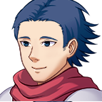
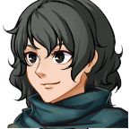
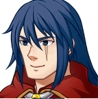

O jogo espada do abismo se encontra em desenvolvimento. Porém você pode baixar a demo jogável para Windows e Android (futuramente será lançado para Linux e MacOS)
Aqui falaremos da história do jogo e sobre os seus personagens.
Ele está sendo desenvolvido por apenas uma pessoa. Acredito que em pouco tempo lançarei a versão final do jogo que contará com diversos diálogos, habilidades, quests e várias outras coisas legais que estive planejando em acrescentar ao jogo.
O jogo se inicia no reino de Fortgrad, que é onde o protagonista reside com a sua família. Muitos jovens do reino treinam para conseguir um dos maiores títulos do reino, que é o de se tornar um membro da guarda real.
O rei Septimus (atual rei de Fortgrad) é conhecido por seu passado em grandes batalhas mas também pelo seu amor, justiça e por grandes feitos quando jovem. Hoje, em idade avançada ele continua o seu reinado, porém muito debilitado e com problemas de saúde. Ele possui um filho chamado Maxwell.

Idade: 21 anos
Um dos seus maiores sonhos é se tornar um dos membros da guarda real. Ele reprovou o exame no ano passado e treinou durante um ano com a determinação de ser tão famoso quando o seu irmão, Kain.

Idade: 20 anos
É uma amiga de infância do Lucius. Ela se mudou junto com a família para o vilarejo dos cogumelos há alguns anos atrás. Como ela alcançou a idade mínima para fazer o exame, ela decidiu treinar e tentar se tornar membra da guarda real.

Idade: 25 anos
Um dos magos mais famosos do reino. Ele é um ex-aluno do Arquimago Drakon. Kain não concorda com a ideia do seu irmão mais novo se tornar um mebro da guarda real. Randall odeia ele.